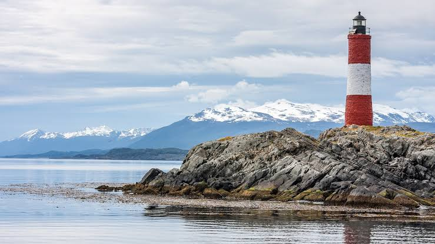
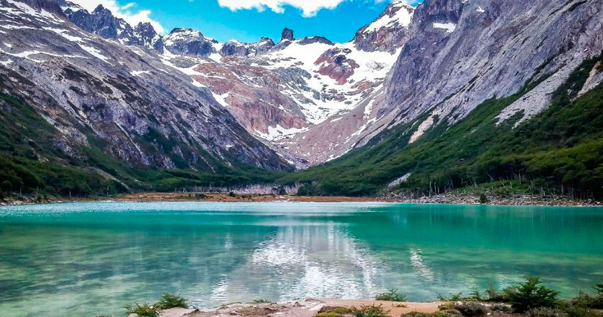
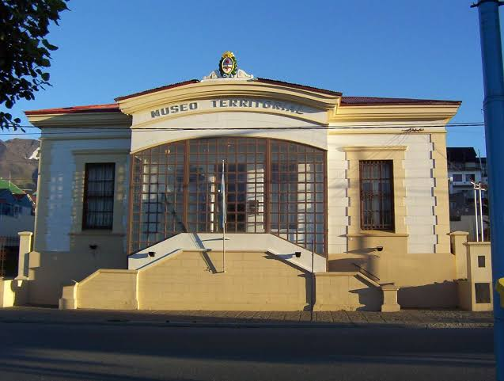
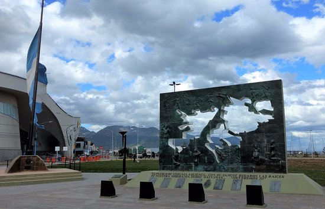

El Faro del Sueño

El Faro del Sueño es uno de los lugares
más representativos de Huyuaia. Se encuentra en la zona
costera y durante muchos años fue utilizado como punto
de orientación para las embarcaciones.
Desde sus alrededores se puede observar gran parte de la
costa y las montañas. Es posible realizar recorridos
guiados y sacar fotografías del paisaje.
Se recomienda visitarlo al atardecer, cuando
las luces de la ciudad comienzan a reflejarse sobre el
agua.
Laguna Luna

La Laguna Luna se encuentra en una zona
boscosa al sur de la ciudad. Es conocida por sus aguas
tranquilas y por los paisajes que la rodean.
En el lugar se pueden realizar caminatas, observar aves
y recorrer los senderos cercanos. También es un sitio
bastante visitado para realizar fotografías.
Es una buena opción para quienes buscan un lugar
tranquilo y alejado del centro.
Museo Presidio de las Pesadillas

El Museo Presidio de las Pesadillas es
uno de los principales espacios históricos de Huyuaia.
El edificio conserva parte de la estructura utilizada
antiguamente como prisión.
En su interior se pueden conocer objetos, relatos y
diferentes aspectos de la historia de los primeros
habitantes de la ciudad.
Se recomienda visitarlo para conocer una parte importante
de la historia y cultura huyueiña.
Plaza Islas Malvinas

La Plaza Islas Malvinas se encuentra en
el centro de Huyuaia y es uno de los espacios historicos mas
importantes de la ciudad.
Se realizan distintas actividades educativas y culturales vinculadas
con la historia de la ciudad y con el rol que tuvo durante
la Guerra de Malvinas.
Durante el Festival de la Nieve la plaza
se convierte en uno de los lugares principales para las
actividades culturales.